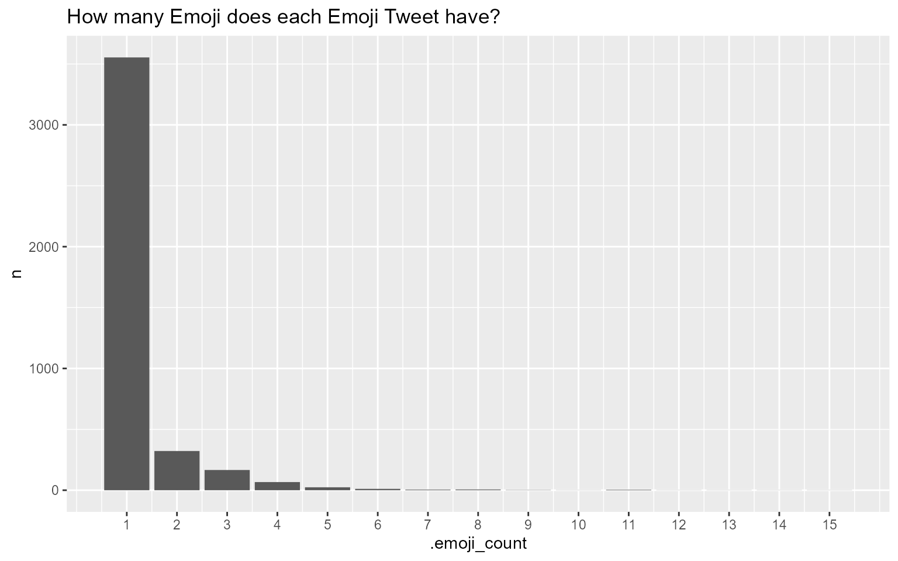
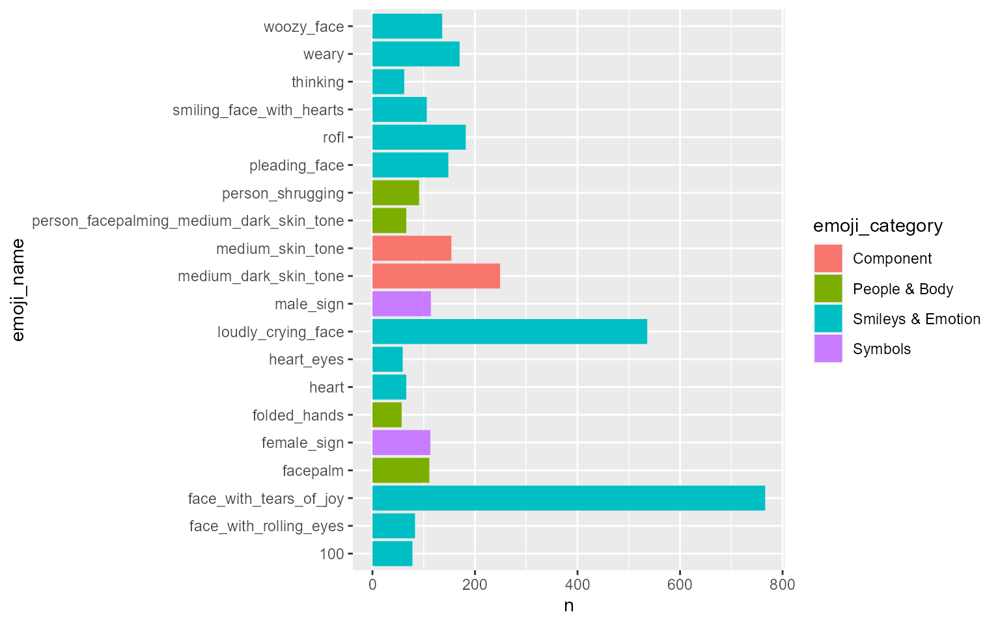
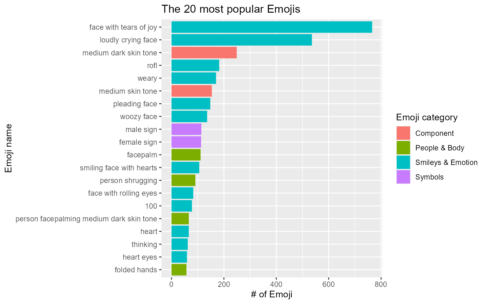
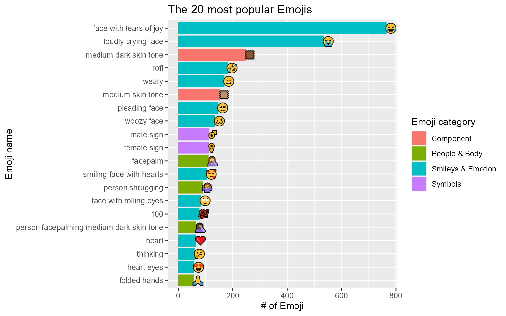
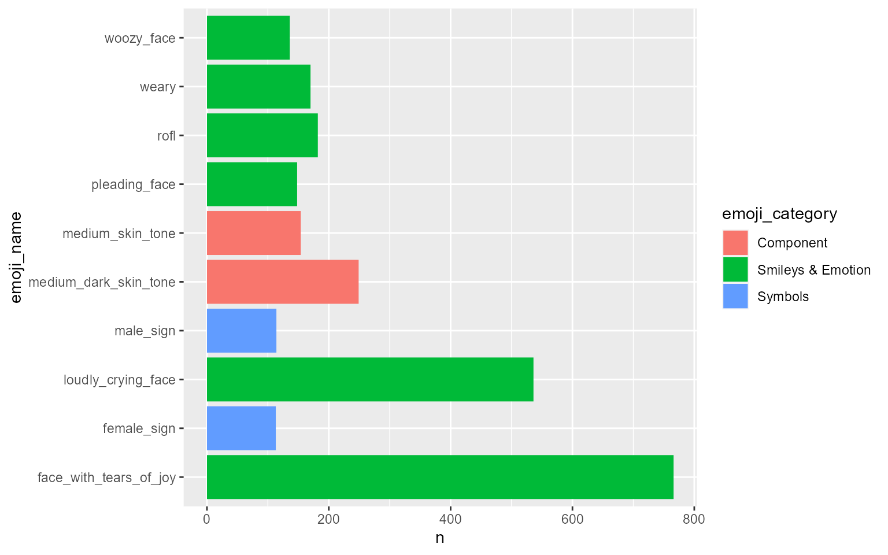
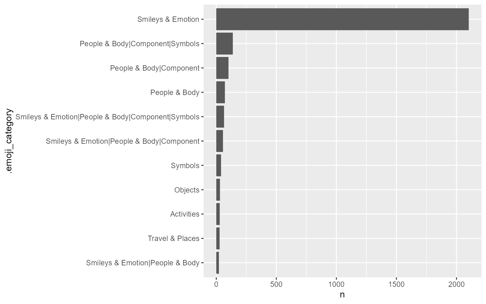
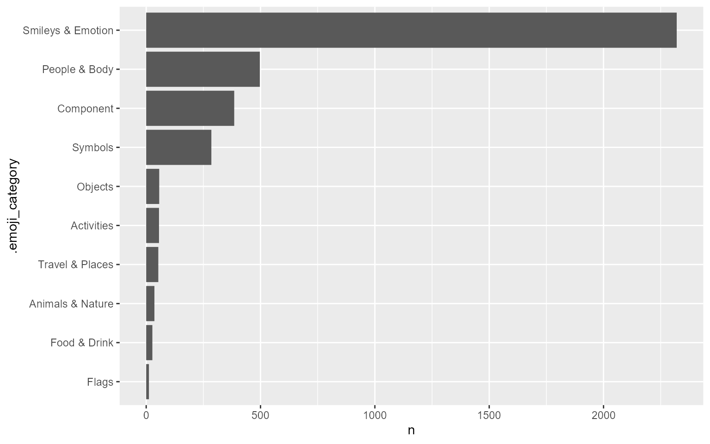

Introduction to tidyEmoji
Youzhi Yu
2022-02-18
introduction.RmdWhy to use the package?
Extracting Emoji from text might not be an easy task. This is especially the case when researchers want to understand the Emoji distribution presented in the full corpus of text data, as Unicode does not work well in conjunction with regular expression. (If you use the stringr package, the filter process is: str_detect(text, "\Uhhhhhhhh")). Part of the difficulty arises when we have to input each Emoji Unicode specifically to find out how many pieces of text contain this Emoji, and it would be daunting to input all existing Unicodes one by one by the user. Another challenge is that not all Unicodes are Emoji. In other words, even if we can find a way to filter all text containing some kind of Unicode, but not all of it might have Emoji per se.
tidyEmoji extracts, counts, and summarizes Emoji data while inheriting the tidyverse style, making the user experience as effortless as possible.
When to use the package?
This package is specifically designed for working Emoji-related text. The ideal case is analyzing Tweets, which comprise Emoji from time to time.
How to use the package?
In this section, I would like to use 10000 Tweets from Atlanta, Georgia to give a comprehensive introduction of tidyEmoji.
A few extra packages are loaded to help make the plots presented in the vignette more organized.
Load the data:
ata_tweets <- readr::read_csv("ata_tweets.csv")The full_text column in ata_tweets is where the actual Tweets are located.
First off, we can use emoji_summary() to see how many Emoji Tweets the data has.
ata_tweets %>%
emoji_summary(full_text)
#> # A tibble: 1 x 2
#> emoji_tweets total_tweets
#> <int> <int>
#> 1 2841 10000The raw data has 10000 tweets in total, 2841 of which have at least one Emoji.
If users want to filter the Emoji Tweets, the emoji_tweets() function is specifically designed for this purpose. Researchers might be interested in finding differences (such as sentiment or timestamp differences) between Emoji and non-Emoji Tweets.
emoji_extract_nest/unnest()
If users would like to see how many Emoji each Tweet has, emoji_extract_nest() can help achieve the task. The function preserves the raw data, in this case ata_tweets. The only change is it adds an extra list column .emoji_unicode to let the users see how many Emoji each Tweet has.
ata_tweets %>%
emoji_extract_nest(full_text) %>%
select(.emoji_unicode)
#> # A tibble: 10,000 x 1
#> .emoji_unicode
#> <list>
#> 1 <chr [0]>
#> 2 <chr [0]>
#> 3 <chr [1]>
#> 4 <chr [1]>
#> 5 <chr [0]>
#> 6 <chr [2]>
#> 7 <chr [0]>
#> 8 <chr [0]>
#> 9 <chr [0]>
#> 10 <chr [0]>
#> # ... with 9,990 more rowsWhen looking at the output above, we know immediately that the first two Tweets do not have any Emoji, but the third and fourth one have 1. If users want to see what exactly each Emoji Unicode is, they can either unnest(.emoji_unicode) or simply use emoji_extract_unnest() as follows:
emoji_count_per_tweet <- ata_tweets %>%
emoji_extract_unnest(full_text)
emoji_count_per_tweet
#> # A tibble: 4,166 x 3
#> row_number .emoji_unicode .emoji_count
#> <int> <chr> <int>
#> 1 3 "\U0001f629" 1
#> 2 4 "\U0001f970" 1
#> 3 6 "\U0001f3fe" 1
#> 4 6 "\U0001f44c" 1
#> 5 11 "\U0001f970" 1
#> 6 12 "\U0001f643" 1
#> 7 15 "\U0001f60e" 1
#> 8 17 "\U0001f97a" 1
#> 9 33 "\U0001f3fd" 2
#> 10 33 "\U0001f629" 1
#> # ... with 4,156 more rowsemoji_extract_unnest() filters out non-Emoji Tweets and outputs the row number of each Emoji Tweet in the row_number column, and the Emoji Unicode(s) presented in each Tweet. .emoji_count counts how many Emoji with such .emoji_unicode in each Tweet.
The following plot shows the distribution of Emoji Tweets in terms of how many Emoji shown.
emoji_count_per_tweet %>%
group_by(.emoji_count) %>%
summarize(n = n()) %>%
ggplot(aes(.emoji_count, n)) +
geom_col() +
scale_x_continuous(breaks = seq(1,15)) +
ggtitle("How many Emoji does each Emoji Tweet have?")
As we can conclude from the plot above, most of the Emoji Tweets only have 1 Emoji, and much fewer Tweets have more than 1 Emoji.
-
top_n_emojis:
top_20_emojis <- ata_tweets %>%
top_n_emojis(full_text)
top_20_emojis
#> # A tibble: 20 x 4
#> emoji_name unicode emoji_category n
#> <chr> <chr> <chr> <int>
#> 1 face_with_tears_of_joy "\U0001f602" Smileys & Emo~ 766
#> 2 loudly_crying_face "\U0001f62d" Smileys & Emo~ 536
#> 3 medium_dark_skin_tone "\U0001f3fe" Component 249
#> 4 rofl "\U0001f923" Smileys & Emo~ 182
#> 5 weary "\U0001f629" Smileys & Emo~ 170
#> 6 medium_skin_tone "\U0001f3fd" Component 154
#> 7 pleading_face "\U0001f97a" Smileys & Emo~ 148
#> 8 woozy_face "\U0001f974" Smileys & Emo~ 136
#> 9 male_sign "<U+2642><U+FE0F>" Symbols 114
#> 10 female_sign "<U+2640><U+FE0F>" Symbols 113
#> 11 facepalm "\U0001f926" People & Body 111
#> 12 smiling_face_with_hearts "\U0001f970" Smileys & Emo~ 106
#> 13 person_shrugging "\U0001f937" People & Body 91
#> 14 face_with_rolling_eyes "\U0001f644" Smileys & Emo~ 83
#> 15 100 "\U0001f4af" Smileys & Emo~ 78
#> 16 heart "<U+2764><U+FE0F>" Smileys & Emo~ 66
#> 17 person_facepalming_medium_dark_skin_tone "\U0001f926\U0~ People & Body 66
#> 18 thinking "\U0001f914" Smileys & Emo~ 62
#> 19 heart_eyes "\U0001f60d" Smileys & Emo~ 59
#> 20 folded_hands "\U0001f64f" People & Body 57top_n_emojis() counts all Emojis presented in the entire text corpus and outputs the top n ones. By default, n is 20.
Here are the top 20 Emojis from ata_tweets:

Tidy up the plot:
top_20_emojis %>%
mutate(emoji_name = stringr::str_replace_all(emoji_name, "_", " "),
emoji_name = forcats::fct_reorder(emoji_name, n)) %>%
ggplot(aes(n, emoji_name, fill = emoji_category)) +
geom_col() +
labs(x = "# of Emoji",
y = "Emoji name",
fill = "Emoji category",
title = "The 20 most popular Emojis")
Besides having Emoji names, users can put the actual Emoji on the plot:
top_20_emojis %>%
mutate(emoji_name = stringr::str_replace_all(emoji_name, "_", " "),
emoji_name = forcats::fct_reorder(emoji_name, n)) %>%
ggplot(aes(n, emoji_name, fill = emoji_category)) +
geom_col() +
geom_text(aes(label = unicode), hjust = 0.1) +
labs(x = "# of Emoji",
y = "Emoji name",
fill = "Emoji category",
title = "The 20 most popular Emojis")
With the presence of Emoji, the Emoji names are more concrete and easier to be understood of what they stand for.
Users can choose n based on their preferences. Here we would like to output the 10 most popular Emojis from ata_tweets:
ata_tweets %>%
top_n_emojis(full_text, n = 10) %>%
ggplot(aes(n, emoji_name, fill = emoji_category)) +
geom_col()
ata_emoji_category <- ata_tweets %>%
emoji_categorize(full_text) %>%
select(.emoji_category)
ata_emoji_category
#> # A tibble: 2,841 x 1
#> .emoji_category
#> <chr>
#> 1 Smileys & Emotion
#> 2 Smileys & Emotion
#> 3 Smileys & Emotion
#> 4 Smileys & Emotion
#> 5 Smileys & Emotion
#> 6 Smileys & Emotion
#> 7 Smileys & Emotion|People & Body|Component
#> 8 Smileys & Emotion
#> 9 Smileys & Emotion
#> 10 Smileys & Emotion
#> # ... with 2,831 more rowsEmojis can be categorized into 10 different categories. For more information in this regard, just simply type ?category_unicode_crosswalk at the console.
If users want to classify each Emoji Tweet for its category/categories, emoji_categorize() is the right function to use. .emoji_category is an added column indicating the Emoji category for each Tweet. If a Tweet has more than one category, | is used to separate various categories.
The following plot shows the Emoji categories who appear more than 20 times among all Tweets:
ata_emoji_category %>%
count(.emoji_category) %>%
filter(n > 20) %>%
mutate(.emoji_category = forcats::fct_reorder(.emoji_category, n)) %>%
ggplot(aes(n, .emoji_category)) +
geom_col()
If users want to see each of the 10 total categories only, separate_rows() from the tidyr package is used to separate categories based on |.
ata_emoji_category %>%
tidyr::separate_rows(.emoji_category, sep = "\\|") %>%
count(.emoji_category) %>%
mutate(.emoji_category = forcats::fct_reorder(.emoji_category, n)) %>%
ggplot(aes(n, .emoji_category)) +
geom_col()
Here we see more than 2000 Tweets fall into the “Smileys & Emotion” category, and the second popular category is “People & Body”. One caveat for this plot is that some Tweets have been double counted, as once they fall into various categories, they are counted in each respective category.
To shed a bit more light on how users may use emoji_categorize() for further analysis, they can look at how each category is corrleated with each other. In other words, if Emoji from one category appears in a Tweet, what Emoji from other categories would be more likely to appear in the same Tweet. To visualize the result, a graph/network visualization is appropriate.